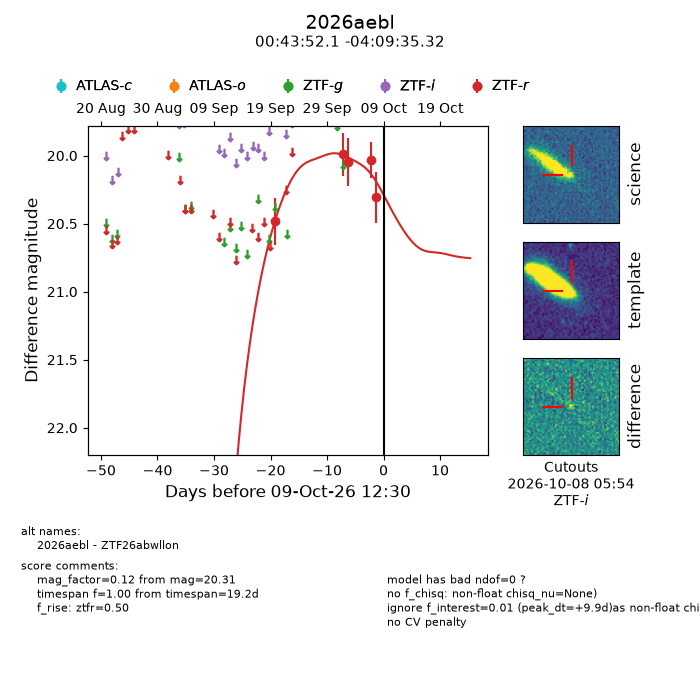
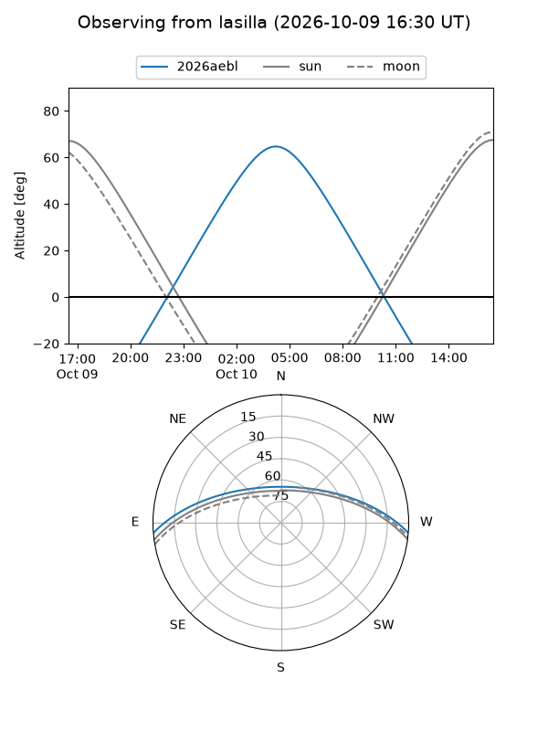
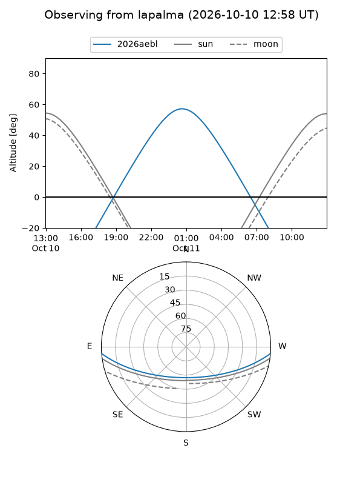
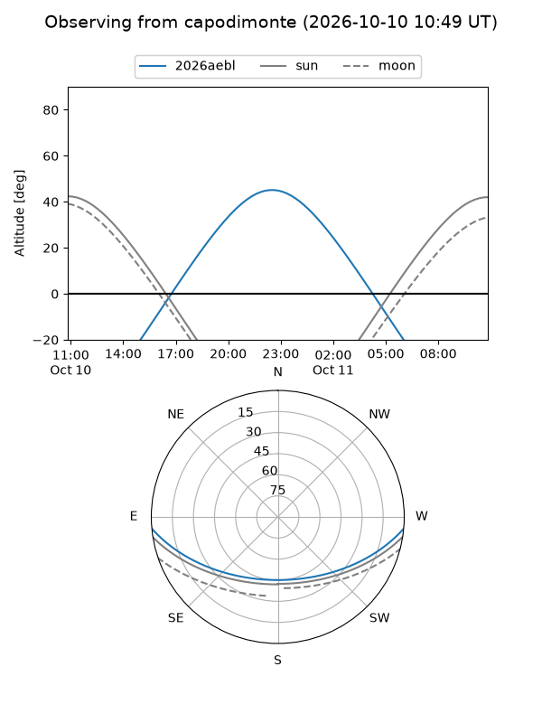
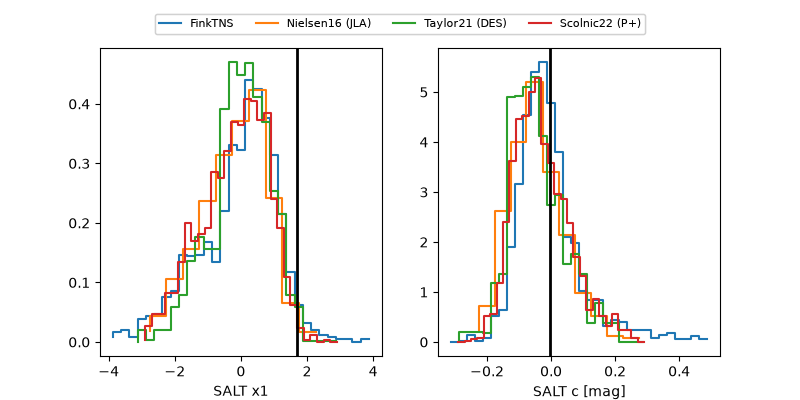

2026aebl
Target 2026aebl at 2026-10-09 12:32
Aliases and brokers:
FINK-ZTF: ztf.fink-portal.org/ZTF26abwllon
Lasair-ZTF: lasair-ztf.lsst.ac.uk/objects/ZTF26abwllon
ALeRCE-ZTF: alerce.online/object/ZTF26abwllon
YSE-PZ: ziggy.ucolick.org/yse/transient_detail/2026aebl
TNS name: wis-tns.org/object/2026aebl
Direct TNS query: direct search
alt names
ZTF26abwllon (ztf,fink_ztf)
2026aebl (tns,yse)
Coordinates:
equatorial (ra, dec) = 10.9673,-4.15981
equatorial (HMS+DMS) = 00:43:52.14,-04:09:35.32
galactic (l, b) = (118.1049,-66.96059)
Flags:
peak dt: +9.9
Photometry:
last ztfr=20.31
5 ztfr detections
Lightcurve

Visibility



Additional plots
